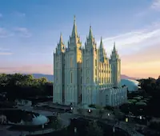
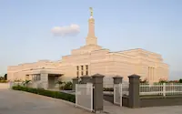
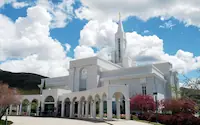
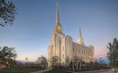
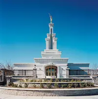
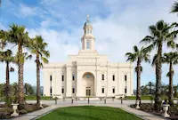
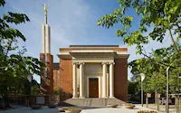
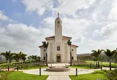

Temple Album
Home
Old
New
Large
Small
Home

Salt Lake Temple

Aba Nigeria Temple

Bountiful Temple

Brigham City Temple

Columbia River Temple

Concepcion Chile Temple

Copenhagen Denmark Temple

Durban South Africa Temple
Las Vegas Temple